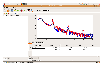

What is GenX ?
GenX is a versatile program using the differential evolution algorithm for fitting X-ray and neutron reflectivity data. It utilizes the Parratt recursion formula for simulating specular reflectivity. The program is easily extensible , allowing users to incorporate their own models into the program. This can be useful for fitting data from other scattering experiments, or for any other minimization problem which has a large number of input parameters and/or contains many local minima, where the differential evolution algorithm is suitable. In addition, GenX manages to fit an arbitrary number of data sets simultaneously. A detailed description has been published in J. Appl. Cryst. 40, 1174 (2007)
How to use it?
GenX is written in python and uses the wxpython package for the Graphical User Interface (GUI). The program is perhaps best described as integrated development environment for  building scattering/reflectivity models. In the basic configuration the user writes a script which defines the physical model of the sample and instrument. This is then loaded into the fitting environment and the user defined parameters can be fitted.
{kind=link}
The new version of GenX contains several improvements in comparison to the older. Most noteworthy are a plugin architecture for add-ons and data loaders as well as new GUI design with easier handling of large data sets. The add-on feature allows expert users to create problem specific GUI components. For example, right know a GUI for defining multilayered sampled for reflectivity is being developed. The data loaders allow different type of data to be loaded by writing plugins that take care of that part. Both of these components can be changed run time.
News
- 2008-09-29
- First beta release!
- 2008-09-28
- Install section added to the homepage
- 2008-08-05
- New homepage added - Welcome to the home of GenX2
Last updated: